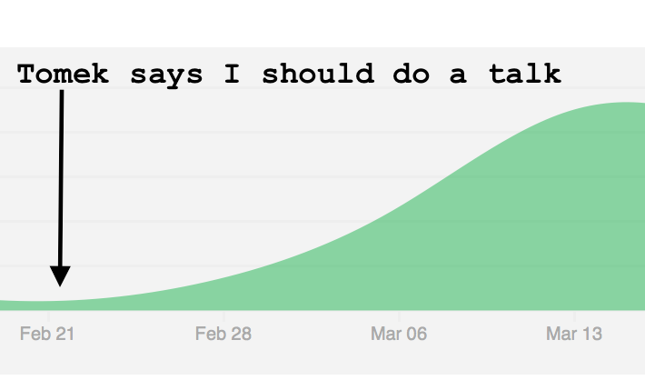

SOC: TNG
lvh
Slides
Introduction
Who am I?

Rackspace

‌
Not a sales pitch, but…
"Rackspace's" SOC
RMS: GA in Jan 2016
No SOC before that?!
CSOC & ISOC
Different mechanics
| CSOC | ISOC | |
|---|---|---|
| Systems? | Many | Few |
| Homogenous? | No | Very |
| Feedback | Some | Lots |
Different services
- Lots of in-house tooling
- Endpoint & phishing focus
This talk: CSOC
Challenges
Lots of APIs!
Don't reinvent the wheel
(I don't want to implement FIM)
Opinionated set of services
Vertical expansion
(vs core competency)
Vendor cycling
Conclusion
Need to integrate with lots of APIs, fast
Scale
Security-, not SOC-as-a-Service
Fire hose

Multi-platform
Lots of OSes


Lots of operators

Lots of platforms


Big bets
Research project
(If we knew what we were doing…)
Motivation

What makes a SOC?
Correlation
SOC analysts
Close cooperation
Dev team ⟷ SOC
RTT hours instead of months
Better correlation tools
- E.g. query language
- Cheaper experiments
- More insights
Education
Enough programming/ML/data analysis
Hosting provider advantage
Economies of scale
Already know the environment
"Internal" data
e.g. from shared network infra
Storage
Storage is pretty cheap
Store by default
- Paper trails
- ML training data
- Experimental detection
Software
Lisp!
Clojure(Script)
Why does it matter?
- I like magical Lispy power
- Rapid development cycle
- Less boilerplate
Ex: enrichments as pure functions
Arbitrary choice computation vs storage
Ex: query language
Cross-event correlation
ip(x) = ip(y)
and (port(x) = {http,https}
or x in my-case)
and suspicious(y)
Query language
- Compiles to logic program
- infix ⇒ sexps ⇒ minikanren ⇒ JVM/JS
- ~identical code on JVM & JS
- Next goal: index-assisted search
Hypothesis: 3 OOM I care about
- <1s: feature detection
- <1h: analysis over larger dataset
- >1d: training ML models
Onyx
- Stream processing
- Like Storm (but better, I think)
Cool Onyx feature: Just functions
Easy to re-use code if experiment fails
Pipeline branches
- Modify pipelines on the fly
- Cheap experiments without jeopardizing prod
- "Would this have caught the attack from last Friday?"
Machine learning
Example: DGA
E.g. Conficker.C, Murofet, BankPatch, Bonnana, Bobax
Generated domains
cikiugcaqcegsimg.org
tosecureonweestablishment.com
Offense
Every day:
- Generate 50k domains
- C&C registers 1 domain
- Box connects to 500
Defense: prevention
- Reactionary
- Lots of domains
Defense: blacklist
Works, but:
- Reactionary
- Regexen 😩
- Not even regexen ðŸ˜
Defense: machine learning
Proxy:
- human can detect
- small {state, feature} space
Defense: machine learning
H₀: legit domain ~ other legit domains
Training set (tagged)
- Legitimate domains (Alexa 1M, OpenDNS)
- Malicious domains (Data Driven Security)
- Malicious domains from botnets (conficker, pushdo, ramdo, rovnix, tinba and zeus)
Features
- Char-level features
- Shannon entropy
- Word-level features
Char-level features
- Shared character sequences
- "Can I pronounce this?"
Shannon entropy
Language-level features
- Google N-gram corpus
- Top 100k words
Language-level features
What words are there?
cikiugcaqcegsimg.org
tosecureonweestablishment.com
- Are these (sort-of) words?
- How many? How long?
Language-level features
Do these words make sense?
bobsfishtacklebait.com
tosecureonweestablishment.com
Refer to n-grams
Methodology
- 80/20 train/eval
- Resample for balance
- Gradient boosted trees
- Evaluate precision & recall
Precision
How many identified items are relevant?
Recall
How many relevant items are selected?
Confusion matrix
| PL | PM | |
| AL | 97.4% | 2.6% |
| AM | 3% | 97.0% |
Some languages are hard
Another example: flux domains
compromised hosts ⇒ routing mesh
Features
- TTL
- Set of IPs at FQDN
- Latency
Results
2-3 nines on the main diagonal
Conclusion re: ML
Great results with not a lot of effort
Further efforts
- Other ML algorithms
- Better features
- More language corpora
- IP allocations
Back-end hardware
Barreleye
Barreleye
Barreleye
Barreleye
- POWER8 @ 3.7-4.1 GHz, 192 HW threads
- >200MiB on-die cache
- 2TB RAM, >200GiB/s mem bandwidth
- CAPI: direct access to flash, FPGA
Barreleye (just one more)
Client hardware
Desktops have more RAM
64GB per desktop
⇓
who cares if Chrome's RSS is 60GB?
Same code on client & back-end
When in doubt, cheat
Cheating: GeoIP
GeoLite2-City-Blocks*
200MB CSV, 33MB mmdb
Cheating: optimizing JS compilers
First pass: self-hosting CLJS
Second pass (cheating)
Metron
Differences
| Desdemona | Metron | |
|---|---|---|
| Prod? | EOY | Now |
| Language | Clojure(Script) | Java |
| Transport | Onyx | Storm/Kafka |
| Tests | Lots | Some |
| CI? | Extensive | Soon™ |
| Coverage? | >90% | ~5% |
Partial coverage